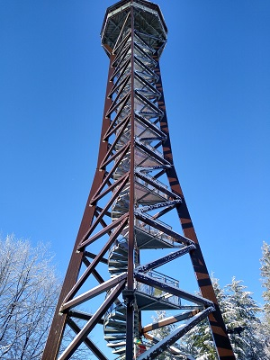

Der Teltschikturm ist ein 41 m hoher Aussichtsturm im Odenwald.Er steht bei Wilhelmsfeld im baden-württembergischen Rhein-Neckar-Kreis auf dem 529,5 m ü. NHN hohen Schriesheimer Kopf im Naturpark Neckartal-Odenwald.
Der 2001 gebaute Holzfachwerkturm wurde „zur Erinnerung an die 1945 verlorene Heimat im Sudetenland“ errichtet. Er wird manchmal abends beleuchtet und ist aus großer Entfernung aus der Oberrheinischen Tiefebene sichtbar. Der Turm bietet weite Aussicht überwiegend im Odenwald und besonders auf das nahe Wilhelmsfeld. Er ist baugleich mit dem 2002 errichteten Aussichtsturm Hohe Warte beim Pforzheimer Stadtteil Hohenwart.
